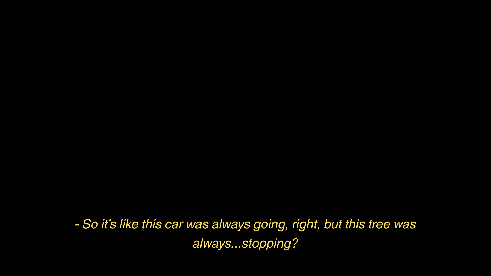
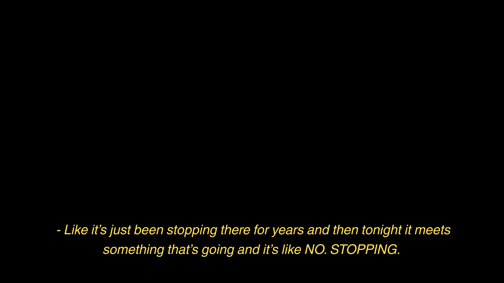
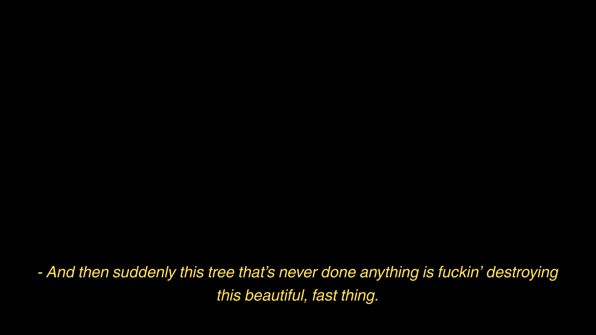
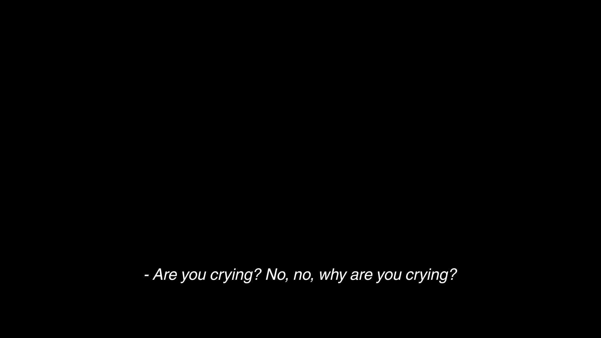
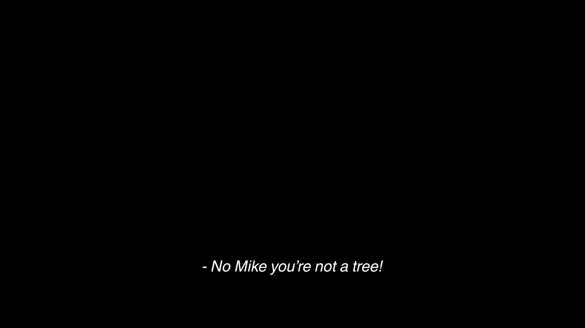

디텐션이다, 달리-앤 로페즈! 그 사유는 수 차례의 경고에도 불구하고 달리-앤이 자신의 온갖 파스텔 컬러 퍼코트를 고수한 것이었다. 달리-앤은 코트를 포기할 수 없었다. 그것은 달리-앤이 처음으로 갖게 된 좋은 옷이었고, 그것을 창고에 처박아 두고 싶지 않았다. 달리-앤은 앳되고 예쁘지만 나이대 특유의 생기가 메말라 가고 있었고, 그것을 잘 알고 있었다. 달리-앤은 말대꾸 한 마디 없이 장갑을 끼고 시청각실로 향했다. 그곳에서 달리-앤은 불청객을 맞닥트렸다. 달리-앤은 소년의 이름을 알았다. 두 학년 위의 에이브리 언더우드. 할아버지와 함께 산댔던가. 달리-앤은 심드렁한 얼굴로 그의 옆에 앉았다. 언제부터인지 몰라도 달리-앤 역시 불청객 축에 끼는 데 익숙했다. 둘은 대화 한 마디 제대로 해본 적 없는 사이였다. 할말이 떠오르지 않아 달리-앤은 소문을 빌리기로 했다.
"너 정말 할머니와 키스했어?"
"그분은 레이디야."
그렇구나. 달리가 고개를 끄덕였다. 그 외에 할 말이 없었다. 지하에 반쯤 잠긴 데다 한 번도 의자 시트를 빨지 않아 쿰쿰한 냄새를 품은 시청각실은 이제 둘을 위한 영화관이 되었다. 어딘가 허술하여 사랑스러운 B급 영화만을 상영하는 영화관이다. 크리스틴 스튜어트가 끝내주게 아름다운 얼굴로 주인공을 바라보고 있었다. 영화 시작도, 인물도 모두 알지 못하는 상태로 달리는 영화에 몰입했다.






갑자기 공기가 바뀌었다. 무언가가 다가오고 있었다...